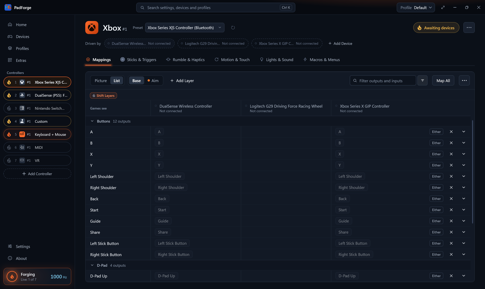

Shift Layers¶
A second mapping table that turns on while an input is engaged. Think of it as Shift or Caps Lock for your controller.

A shift layer overlays or replaces your Base mappings while an activator is engaged. Hold a button to remap your face buttons to pit-menu commands. Toggle a switch to swap from menu controls to gameplay. Cycle through three layouts with one bumper.
Each slot has its own layers. Open a controller, switch its Mappings section to the List view, and click Add Layer.
Concepts¶
Base layer. Always present, and active whenever no shift layer is engaged. Every slot starts with one Base layer holding the rows you bind in the Mappings section. A Configure Base window sets the Base chip's name, color and icon, and how long the flyout shows Base.
Shift layer. A second (third, fourth) mapping table on the same slot. Active only while its activator is engaged.
Layer rows. Each mapping row belongs to one layer. Base rows belong to Base. Shift rows belong to the layer you bound them on. The same target can have a different row on each layer, so one button does one thing on Base and another while a shift layer is engaged.
Unmapped Controls. A choice in the Shift Layer window. Do Nothing, the default, makes the active shift layer replace Base: targets without a row on the layer output zero. Fall Through to Base makes the layer overlay Base: targets without a row keep their Base mappings.
Do Not Inherit. A per-row switch beside the open row's Combine. It appears only while you edit a layer set to Fall Through to Base. Check it to keep one target off on this layer while the rest of the layer falls through to Base. Useful when you want one specific button silenced.
Make a shift layer¶
- Open a controller. In its Mappings section, click List.
- Click Add Layer.
- The Shift Layer window opens, its name filled in as Shift 1 (or the next free number). Fill in the fields below.
- Click Save. A chip for the layer appears in the row of layers at the top of the section, after Base.
- Click the new chip and bind rows the same way you bind Base rows.
The Shift Layer window¶
Add Layer opens it for a new layer, and a chip's right-click Configure Activator… for an existing one. The window shows the rows most layers need. More (its hint reads "Mode, input kind, timing, flyout and color") opens the rest, and it opens by itself for a layer that has any of them set off their defaults. Delete Layer sits at the window's foot for a layer that exists.
| Field | What it does |
|---|---|
| Name | The label on the layer's chip and on the engaged-layer flyout (e.g. Pit Stop). Required, and unique on the slot. |
| Icon | The square button before the Name box shows the layer's icon and opens a picker (tooltip: Pick an emoji or an image to show on the flyout when this layer is engaged.). Emoji lists the emoji by category. Images shows the pictures in every added icon package, and its Browse Files… takes an image file or a .pficons package. Reset to Default (⇧) puts the default back. The icon appears on the flyout when the layer engages. Defaults to ⇧. |
| Held With | The input that engages the layer, picked across every device on the slot, with Record and Clear. It can live on a different physical controller than the slot it shifts. The label follows the mode: Held With for Hold, Pressed With for Toggle, Latch and Sticky, Next Layer With for Cycle. Optional for Cycle and No Button, so you can wire a queue up incrementally. |
| And With | The chord's second input, with its own device picker, shown for Chord (A + B). A Cycle layer shows Previous Layer With here instead. |
| Axis Threshold | How far the axis has to go, shown for Axis Past Threshold. 0.05 to 1.0 of full deflection, 0.5 by default. |
| Unmapped Controls | Do Nothing (the default) replaces Base: controls this layer does not map stay off. Fall Through to Base overlays: they keep their Base mappings. |
| Mode | Under More. Hold, Toggle, Latch, Cycle, Sticky (One-Shot), or No Button. See Modes. |
| Activator Kind | Under More. Button, Chord (A + B), or Axis Past Threshold. See Activator kinds. A Cycle layer takes a button. |
| Only While in Layer | Under More. The layer the slot must be on for the activator's input to count. Any Layer (default) means the input always counts. The list holds Base and every layer on the slot. Hidden for No Button. See Per-layer activators. |
| Fire on Release | Under More. Waits until the button is let go before the activator fires. With a Delay set, the press must last that long for the release to count. Shown only for Toggle, Latch, Cycle, and Sticky (One-Shot). Hold reacts on both edges by nature and No Button has no input, so neither shows it. |
| Also Fire Activator’s Own Mapping | Under More. Off by default. On lets the activator input drive its own row alongside the layer change. Off holds the input back from every reader in a row: a source on it reads released, an Up or Down key on it reads released, and an Invert on Hold modifier on it inverts nothing. A D-pad direction is held back from the combined D-pad row too. Hidden for No Button. |
| Cycle Through Layers | Under More, for a Cycle layer. See Cycle queue. |
| Delay | Under More. 0 to 2000 ms the activator must stay held before the layer reacts. For Hold, a debounce. For Toggle, Latch, and Sticky, a long-press threshold: the layer flips once when the hold crosses this time, and a shorter tap does nothing. 0 reacts instantly. |
| Auto-Cancel After Inactivity | Under More, Toggle mode only, 0 to 30000 ms. While the layer is toggled on, it switches itself off after this many milliseconds with none of the layer's own mapped inputs active. The timer starts when the layer engages and restarts on every layer input. On a keyboard and mouse slot, a layer's gyro or touchpad mouse row counts while it moves the cursor or a finger rests in the part of the pad the row reads, and a flick stick row while it turns or its stick is held past the flick threshold. A pointer row counts while it aims: a Wii Remote while it sees the sensor bar, a touchpad pointer while a finger is on its part of the pad. 0 keeps the layer on until you toggle it off yourself. |
| Flyout | Under More. How long the engaged-layer flyout shows this layer: While the Layer Is On (the default), For 2 Seconds, or Never. Shown only while Shift Layer Flyout is on under Extras, Overlays. A window that hides the row keeps the layer's choice when you save. |
| Layer Color | Under More. Full color picker. Tints the chip and the flyout. Reset to clear. |
Configure Base has the name, icon, Flyout and Layer Color rows only. Its Flyout offers For 2 Seconds (the default) and Never, because Base is on whenever no shift layer is and has no time of its own to stay for.
Activator kinds¶
| Kind | Engages when |
|---|---|
| Button | One button (or POV direction) is pressed. Default. |
| Chord (A + B) | Two inputs are held at once. The second input has its own device picker, so chords can cross devices (left bumper on the wheel plus button 1 on the H-pattern shifter). |
| Axis Past Threshold | An analog axis crosses the threshold. Default threshold is 0.5 of full deflection. Useful for clutch travel, paddle pulls, throttle past idle. |
Modes¶
| Mode | Behavior |
|---|---|
| Hold | Layer is active while the input is engaged. Release the input and the slot falls back to the next layer still held, or to Base when none is, unless a Latch or Cycle holds it. The keyboard-Shift model. |
| Toggle | Each press flips engagement. Press once to engage. Press again to release. The Caps-Lock model. Set Auto-Cancel After Inactivity to have the layer drop itself after a spell with no input of its own. |
| Latch | Press to latch this layer's own mappings on. Press again to return to Base. Pressing a different Latch button switches straight to that layer. Renamed from Custom. |
| Cycle | One control steps through a queue of layers. See Cycle queue for the Next and Previous buttons and the queue options. |
| Sticky (One-Shot) | One press engages. The next input you touch on any device assigned to the slot (button, stick, trigger, D-pad, or touchpad) fires on the layer while held, and the layer releases when you let that input go. Tap-then-tap muscle memory without holding. |
| No Button | A passive layer with no activator of its own. It owns a chip and its mappings but never self-engages. You reach it through a Cycle queue or a Switch Layer macro. |
Toggle, Latch, Cycle, and Sticky normally fire on the press. Check Fire on Release in the Shift Layer window to move that to the release edge instead, so the layer flips when you let go of the button.
Toggle, Latch, Cycle, and Sticky engagement state does not persist across an app restart. Hold is stateless, so it survives by definition. A No Button layer has no engagement state of its own.
Cycle queue¶
A Cycle activator holds a queue of layers and two buttons that walk it.
- Next Layer With. The activator's own input. Each press steps the shared cursor forward one layer.
- Previous Layer With. A second input that steps the same cursor backward. It can live on a different device.
- Cycle Through Layers. A checkbox list of which layers sit in the queue.
- Wrap Around. On by default. Step past the last layer and the cursor returns to the first.
- Include Base. Off by default. With it off, the cycle walks the checked layers only, and Base is the resting state. Turn it on to fold Base into the queue.
Next and Previous drive one shared cursor, so they read as forward and backward through the same queue.
Per-layer activators¶
Only While in Layer in the Shift Layer window makes an activator's input count only while the slot is on the chosen layer. The check happens when the input goes down and holds for the whole press.
- A press that opens with the slot on the right layer keeps counting until it releases, even when the layer changes under it.
- A press that opens on the wrong layer stays dead until it releases, even if the slot reaches the right layer mid-hold. Its button's rows on the engaged layer fire as normal.
- A menu cell committed by leaving a layer counts as pressed on that layer, so an activator set to that layer whose input is the cell fires, though the layer has just ended.
- A Cycle activator's Previous Layer With input carries the same check on its own.
- Any Layer is the default, and every layer made before this setting existed behaves that way.
- Deleting the named layer leaves the condition inert. The window keeps showing the old name rather than quietly widening the activator to every layer.
The setting lets one button mean something different per layer. Author each layer's exits on that layer, with another activator or a Switch Layer macro.
A three-way example on one button, all three activators bound to the same input:
| Activator | Mode | Only While in Layer | Result |
|---|---|---|---|
| Combat | Latch | Base | From Base, the button opens Combat. |
| Vehicle | Latch | Combat | From Combat, the same button opens Vehicle. |
| Switch Layer macro to Base, scoped to Vehicle | (macro) | From Vehicle, the same button returns to Base. |
Without the condition, both Latch activators would fire on every press.
The row of layers¶
A row of layer chips sits at the top of the Mappings section, in both views. It appears once the slot has its first shift layer. A slot with only Base shows no chips. Base is always the first chip. Shift layers follow in creation order. The row wraps to a second line when there are more layers than fit. Add Layer sits beside it in the List view.
Each shift-layer chip carries the layer's color as a dot. The selected chip is the layer you're editing, not the layer currently engaged on the controller.
Right-click a chip for per-layer operations:
- Configure Activator… Reopens the Shift Layer window above, or Configure Base on the Base chip.
- Rename Layer… Edits the display name without breaking the link between each row and its layer.
- Copy Layer Rows. Copies every row on this layer to an in-app clipboard that lasts until PadForge closes.
- Paste Rows into Layer. Replaces this layer's rows with the copied ones, re-tagging them to it. Rows already on the destination layer are removed first.
- Clear Layer Rows. Removes every row on this layer. The layer itself stays.
- Delete Layer. Removes the layer and every row tagged to it, and drops it from the slot's Cycle queues. Macros scoped to it are switched off and set to Any Layer. Confirms first.
The engaged-layer flyout¶
When a shift layer engages, a Windows-11-style flyout appears at the bottom of the screen showing the layer's icon and name. A picture icon draws scaled into the icon's spot on the flyout line, 20 pixels square. One that can no longer be found (a removed package, a moved file) shows ⇧ instead.
Each layer's Flyout row sets how long it stays:
- While the Layer Is On, the default, keeps it up until the layer changes.
- For 2 Seconds shows it when the layer turns on, then lets it go.
- Never shows no flyout for the layer, and Base shows none when that layer ends.
When the slot returns to Base, the flyout shows the Base chip's name and icon once and slides away 2 seconds later, unless Configure Base sets Base's Flyout to Never.
The flyout scans every slot, starting with the pad you are viewing. Engage a layer from any slot's activator and the flyout shows. Pick a different icon and color per layer so multi-slot rigs read at a glance.
The Overlays page under Extras carries a Shift Layer Flyout switch, on by default. Turn it off and layers still engage, just without the announcement, and the Shift Layer window hides its Flyout row.
Multi-activator resolution¶
A slot can have many activators. When more than one Hold, Toggle, or Sticky activator is engaged at the same time, the most recently engaged wins. The active layer is whichever of those fired last.
Releasing the winning activator falls back to the next-most-recent still-engaged one. Release them all and the slot returns to Base.
Latch and Cycle override that stack. A latched layer, or a Cycle stopped on a layer, holds the slot there no matter what the Hold, Toggle, and Sticky activators do. Releasing every held activator does not drop it. A Latch clears on a second press of its own button, when another Latch takes over, when a Cycle on the same slot steps, or when a Switch Layer macro fires. A Cycle's cursor moves only on Next or Previous, but a Latch press on the same slot displaces the layer the Cycle selected until the Cycle steps again. Latch and Cycle share one override, so use one or the other per slot if you want them to hold unconditionally.
Beyond mapping rows¶
Layers carry more than button rows:
- Any output type. Layer rows drive every virtual output the slot has: Xbox and PlayStation outputs, Extended buttons, MIDI notes, keyboard keys, mouse moves, and touchpad outputs all follow the active layer.
- Flick stick. A flick stick row hosted on a layer arms when the layer engages and goes quiet when it drops, with no half-finished turn left running.
- Macros. Every macro has a Layer picker. Any Layer fires regardless of the engaged layer. A named layer's macros fire only while that layer is engaged. Base macros fire on Base and while an engaged layer inherits from Base, exactly like a Base mapping row. A macro can also change the layer: the Switch Layer action jumps the slot to any layer or back to Base and holds it there the way a Latch does.
- Key colors. The Key Colors card in the Lights & Sound section keeps its own colors for each layer. A shift layer shows its colors over the Base layer's, light by light, and Other Lights says what the lights without a color on that layer show: the Base layer's colors, Same as Lightbar, Off or One Color. See Lighting.
- Consumed keys. With Consume Mapped Inputs (Hooks) on for a keyboard or mouse, a key or mouse button that only a layer's rows read is eaten only while the engine evaluates those rows, and a macro on a layer eats its trigger key only while that layer is engaged. On Base, where nothing reads the key, it types normally.
- Menus. An on-screen menu set to a named Layer (menus imported from a Steam action layer arrive that way) engages only while that layer is engaged, and the layer ending commits an On Touch Release menu's hovered cell.
Worked example: a Pit Stop layer for a racing sim¶
Goal. Hold or toggle a side button on the wheel and the face buttons of the slot's controller turn into pit-menu commands. Release to drive again.
- Open the controller. In its Mappings section, click List.
- On Base, bind the wheel and pedals to the steering and trigger axes. Leave the face buttons mapped to your normal in-car HUD.
- Click Add Layer.
- Name:
Pit Stop. Click the icon button before it and pick 🔧. - Unmapped Controls: Fall Through to Base. Steering, brakes, and clutch keep working while the menu is up.
- Open More. Mode: Toggle. One tap to open the menu, one tap to close.
- Pressed With: click Record, press the side button on the wheel rim.
- Layer Color: orange.
- Click Save. The Pit Stop chip appears.
- Click the Pit Stop chip. Bind A, B, X, Y to your sim's pit menu commands (tires, fuel, repair, leave).
Tap the wheel button at the start of your pit lane. The flyout pops with the wrench. A/B/X/Y now drive the pit menu. Tap again on the way out. Pit Stop closes, face buttons return to the in-car HUD.
Where shift layers live¶
Shift layers save inside each profile. Every profile keeps its own set of layers and activators, so one game's layers never leak into another.
Engagement state does not survive a restart. Toggle's on/off flag, Sticky's one-shot latch, and Latch's and Cycle's current-layer pointer all reset to Base when you launch the app or switch profiles.
Tips¶
- The activator input can be on a different device than the slot it shifts. Bind a foot-pedal button to shift your wheel slot.
- Two-layer setups are the most common. Reach for Cycle when one button should step through several layouts (menu → combat → vehicle in a sim shooter).
- The flyout is read at a glance, so pick a per-layer icon that's distinct (🔧 vs ⚔ vs 🚗, or three pictures from an icon package).
- Sticky mode is the right pick for one-tap moves you don't want to hold (Cancel on the next menu input, single emote after a kill).
- Cross-device chords cut accidental engagement. A wheel bumper plus a shifter button is hard to hit by accident in normal driving.
Limitations¶
- A row's Combine setting is fixed per row. If you need a target to combine its sources differently per layer, build separate rows on each layer.
- The engaged-layer flyout checks engagement about 30 times a second, on its own timer, not at the input polling rate. A very fast tap that engages and releases in under about 33 ms can fall between two checks and skip the flyout. Raising your controller's polling rate does not change this.
- Latch stays on its layer until you press the same button again (back to Base), press a different Latch button (switch to that layer), step a Cycle on the same slot, or fire a Switch Layer macro. It does not release on its own.
Related pages¶
- Button and Axis Mappings: the row of layers sits at the top of the Mappings section. Base rows are bound there too.
- Macros: every macro carries a Layer scope. Leave it on Any Layer, or pin the macro to one layer so it fires only while that layer is engaged. The Switch Layer action moves the slot between layers from a macro.
- Profiles: shift layers save per profile, so each game can run its own layer set.
- Controller Slots: every slot keeps its own layers.
Last updated for PadForge 6.0.0.